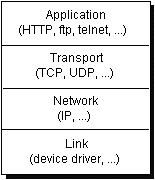
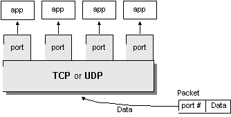

2. Как работи Интернет? Основи на TCP/IP мрежите.
- 7-слоен OSI модел на компютърните мрежи;
The Open Systems Interconnection Reference Model
(OSI Model or OSI Reference Model for short) is a layered abstract description
for communications and computer network protocol design, developed as part
of the Open Systems Interconnect initiative. It is also called the OSI
seven layer model.
The following diagram attempts to show where various
TCP/IP and other protocols would reside in the original OSI model:
|
7
|
Application
|
e.g. HTTP,
SMTP,
SNMP,
FTP,
Telnet,
NFS
|
|
6
|
Presentation
|
e.g. XDR,
ASN.1,
SMB,
AFP
|
|
5
|
Session
|
e.g. ISO 8327 / CCITT X.225, RPC,
NetBIOS,
ASP
|
|
4
|
Transport
|
e.g. TCP,
UDP,
RTP,
SPX,
ATP
|
|
3
|
Network
|
e.g. IP,
ICMP,
IGMP,
X.25,
CLNP,
ARP,
OSPF,
RIP,
IPX,
DDP
|
|
2
|
Data Link
|
e.g. Ethernet,
Token ring, PPP,
HDLC,
Frame relay,
ISDN,
ATM
|
|
1
|
Physical
|
e.g. electricity,
radio,
laser
|
- пакет от протоколи TCP/IP
The Internet Protocol (IP) is a data-oriented
protocol used by source and destination hosts for communicating data across
a packet-switched internetwork.
Transmission Control Protocol (TCP) is a
connection-oriented, reliable delivery byte-stream transport layer protocol
currently documented in IETF RFC 793 [1] (http://www.ietf.org/rfc/rfc793.txt).
The User Datagram Protocol (UDP) is a minimal
message-oriented transport layer protocol that is currently documented
in IETF RFC 768.
The Internet Control Message Protocol (ICMP)
is part of the Internet protocol suite and defined in RFC 792. ICMP messages
are typically generated in response to errors in IP datagrams (as specified
in RFC1122 (http://www.ietf.org/rfc/rfc1122.txt)) or for diagnostic or
routing purposes.
The Internet Group Management Protocol (IGMP)
is a communications protocol used to manage the membership of Internet
Protocol multicast groups. IGMP is used by IP hosts and adjacent multicast
routers to establish multicast group
memberships.
- 4-слоен модел на TCP/IP мрежите:
|  |
|
| Application |
приложно ниво |
| Transport |
транспортно ниво |
| Internet |
Интернет ниво |
| Link |
свързващо ниво |
|
- IP адреси:
Адресите на възлите (компютрите) в Интернет (IP-номерата)
са 32-битови числа, обикновено записвани като 4 десетични числа (октети
или байта), разделени с точки, например 213.191.194.20.
Използват се 3 основни типа (класа) адреси, което
е направено с цел да се получи добро решение на проблема всеки адрес да
указва както мрежата, така и компютъра в нея. Основното предположение е,
че има много на брой мрежи, но повечето от тях са малки. Приема се, че
24 бита (224=16777216) са достатъчни за номерирането на всички
мрежи в света. Въведени са 3 типа адреси, което води и до 3 класа мрежи.
-- клас A: 1 байт за адрес на мрежата (числата
от 1 до 126) + 3 байта за номериране на компютрите в мрежата; броят на
всички мрежи от този клас е до 126.
-- клас B: 2 байта за адрес на мрежата (от
128.1 до 191.254, числото 127 в първия байт, както и числата 0 и 255 във
втория, са запазени за специални цели) + 2 байта за адресиране на компютрите
в мрежата (64516 броя); броят на всички мрежи от този клас е до 16256.
-- клас C: 3 байта за адрес на мрежата (от 192.1.1
до 223.254.254) + 1 байт за номериране на компютрите в мрежата (254 броя);
броят на всички мрежи от този клас е до 2064512.
Адресите, започващи с число над 223, образуват класовете
D и E и са запазени за специални цели.
- DNS
IP addresses are not
easy to remember, even using dotted decimal notation. The Internet has
adopted a mechanism, referred to as the Domain Name System (DNS),
whereby computer names can be associated with IP addresses. These computer
names are referred to as domain names. The DNS has several rules
that determine how domain names are constructed and how they relate to
one another. For the purposes of this chapter, it is sufficient to know
that domain names are computer names and that they are mapped to IP addresses.
- протоколите TCP и UDP
TCP (Transmission
Control Protocol) is a connection-based protocol that provides a reliable
flow of data between two computers.
UDP
(User Datagram Protocol) is a protocol that sends independent packets
of data, called datagrams, from one computer to another with no guarantees
about arrival. UDP is not connection-based like TCP.
The
TCP and UDP protocols use ports to map incoming data to a particular process
running on a computer. In datagram-based communication such as UDP, the
datagram packet contains the port number of its destination and UDP routes
the packet to the appropriate application, as illustrated in this figure:

- портове - какво представляват и защо са необходими?
Port
numbers range from 0 to 65,535 because ports are represented by 16-bit
numbers. The port numbers ranging from 0-1023 are restricted; they are
reserved for use by well-known services such as HTTP and FTP and other
system services. These ports are called well-known ports. Your applications
should not attempt to bind to them.
|
source IP;
source port;
destination IP;
destination port; |
- сокети
Сокет наричаме двойката (IP адрес, номер на порт),
комуникационен канал за една TCP връзка.
- как работят сокетите и портовете?
IE = 213.191.194.20:1033 <-> 212.50.1.81:80 = Appache
Web Server
IE = 213.191.194.20:1037 <-> 212.50.1.81:80 = Appache
Web Server
OE=213.191.194.20:1044 <-> 212.50.1.81:110 = POP3
Server
FTP=213.191.194.20:1054 <-> 213.53.10.181:21 = FTP
Server
- сървери и клиенти
Клиент - свързва се към сървера и отваря сокет.
Сървер - "слушат на определен порт" и чакат клиетско приложение да
се свърже към тях.
- програмен модел сървер-клиент
Магазин с няколко щанда за клиенти.
- портовете при UDP протокола
Няма комуникационен канал, а се изпращат и получават единични пакети.
- протоколи
Формалните езици, които се използват за комуникация в компютърните
мрежи се наричат протоколи.
- услуги в Интернет и стандартни номера на портове
Popular Internet application
protocols are associated with well-known ports and wel-known
Internet services. The server programs implementing these protocols
listen on these ports for service requests. The well-known ports for some
common Internet application protocols are:
| Port |
Protocol |
Service description |
| 21 |
File Transfer Protocol(FTP) |
Transfers files |
| 22 |
>SSH (Secure Shell Protocol) |
Allows secure remote administration through standard shell (console) |
| 25 |
Simple Mail Transfer Protocol |
Send email |
| 80 |
HyperText Transfer Protocol(HTTP) |
Accesse the WWW (World Wide Web) |
| 110 |
Post Office Protocol |
Receive email |
The well-known ports are used to standardize
the location of Internet services.
- IPv6 протокол
IPv6 is version 6 of the Internet Protocol.
IPv6 is intended to replace the previous standard, IPv4, which only supports
up to about 4 billion (4x109) addresses, whereas IPv6 supports
up to about 3.4x1038 addresses.
IPv6 is the second version of the Internet
Protocol to be widely deployed, and is expected (as of 2001) to form the
basis for future expansion of the Internet. In 2003, Nihon Keizai Shimbun
(as cited in CNET Asia Staff, 2003) reported that Japan, China, and South
Korea claimed to have made themselves determined to become the leading
nations in internet technology, which would partially take the form of
jointly developing IPv6, and completely adopting IPv6 starting in 2005.
The compelling reason behind the formation
of IPv6 was lack of address space, especially in the heavily populated
countries of Asia such as India and China.
IPv6 addressing
The most dramatic change from IPv4 to IPv6
is the length of network addresses. IPv6 addresses, as defined by RFC 2373
and RFC 2374, are 128 bits long; this corresponds to 32 hexadecimal digits,
which are normally used when writing IPv6 addresses, as described in the
following section.
The number of possible addresses in IPv6 is 2128.
The number of IPv6 addresses can also be thought of as 1632
as each of the 32 hexadecimal digits can take 16 values (see combinatorics).
In some situations, IPv6 addresses are composed of two logical parts: a
64-bit network prefix, and a 64-bit host-addressing part, which is often
automatically generated from the interface MAC address.
Notation for IPv6 addresses
IPv6 addresses are 128 bits long but are normally
written as eight groups of 4 hexadecimal digits each. For example,
3ffe:6a88:85a3:08d3:1319:8a2e:0370:7344
is a valid IPv6 address. If a 4 digit group is 0000, it
may be omitted. For example,
3ffe:6a88:85a3:0000:1319:8a2e:0370:7344
is the same IPv6 address as
3ffe:6a88:85a3::1319:8a2e:0370:7344
Following this rule, if more than two consecutive
colons result from this omission, they may be reduced to two colons, as
long as there is only one group of more than two consecutive colons. Thus
2001:2353:0000:0000:0000:0000:1428:57ab
2001:2353:0000:0000:0000::1428:57ab
2001:2353:0:0:0:0:1428:57ab
2001:2353:0::0:1428:57ab
2001:2353::1428:57ab
are all valid and mean the same thing, but
2001::25de::cade
is invalid. Also leading zeros in all groups can be omitted,
thus
2001:2353:02de::0e13
is the same thing as
2001:2353:2de::e13
IPv4 addresses are easily convertible to IPv6
format. For instance, if the IPv4 address was
135.75.43.52,
it could be converted to
0000:0000:0000:0000:0000:0000:874B:2B34
or
::874B:2B34.
Then again, one could use the hybrid notation (IPv4 mapped addresses),
in which case the address would be
::135.75.43.52.